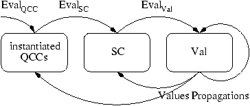

|
CARDIS '02 Paper
[CARDIS '02 Tech Program Index]
| Pp. 97-110 of the Proceedings |  |
Secure Object Flow Analysis for Java Card
Marc Éluard and Thomas Jensen
{eluard,jensen}@irisa.fr
IRISA, Campus de Beaulieu
F-35042 Rennes, France
Abstract
The access control exercised by the Java Card firewall can be bypassed by the use of shareable objects.
To help detecting unwanted access to objects, we propose a static analysis that calculates a safe
approximation of the possible flow of objects between
Java Card applets.
The analysis deals with a subset of the Java Card
bytecode focusing on aspects of the Java Card firewall, method invocation, field
access, variable access, shareable objects and contexts. The technical vehicle for
achieving this task is a new kind of constraints: quantified conditional
constraints,
that permits us to model precisely the effects of the Java Card firewall by
only producing a constraint if the corresponding operation is
authorized by the firewall.
1 Introduction
The Java Card language is a subset of Java, tailored to the limited
resources available on today's smart cards. Java Card keeps the essence of Java, like inheritance,
virtual methods, overloading, but leaves out features such as
large primitive data types (long, double and float),
characters and strings, multidimensional arrays, garbage collection,
object cloning, security managers [1, 10].
Given the security-critical application areas of Java Card,
the language has been endowed with an elaborate security architecture.
A priori, applets are separated by a firewall which prevents one applet from
accessing objects owned by another applet. Thus, even if a foreign applet obtains a reference to an
object with confidential information this does not imply that
the information is leaked.
In order to provide a means of communication between separated
applets, objects can be marked as shareable. This allows to
grant access to (a subset of) the methods of the objects through
the firewall. The problem is that marking an object as shareable means
that its shared methods can be accessed by all applets that
manage to get a reference to the object. To counter this
problem, Java Card offers a limited form of stack inspection, allowing a ``server'' applet to
know the identity of a ``client'' object which invoked a particular
method. This, however, must be programmed explicitly by the
application programmer. These mechanisms (described in detail in
section 2) allow the design of secure
applications but do not themselves guarantee security.
Further code analysis must be employed to establish that the checks programmed in
the server applet guarantee that confidential data is not
leaked via shared objects. To summarize:
The Java Card firewall can be bypassed by using shareable
objects. Data flow analysis permits to calculate a safe approximation
to the access control actually implemented by a set of applets, and
thus to verify that a given access
policy is respected.
This paper presents a flow analysis for Java Card programs. The analysis is
constraint-based in that for each instruction of the program it
generates a set of constraints describing the data flow of the
instruction.
The resolution of this system permits to find the possible values of the variables used in the program
and the called method.
The analysis relies on a novel technical device,
quantified conditional constraints (QCCs), that allows to generate the
set of constraints of a program on demand. This way of
generating constraints is useful and natural when analyzing object-oriented
languages where the control flow and the data flow are
inter-dependent. It generalizes the conditional constraints proposed by
Palsberg and Schwartzbach [20]
for object-oriented type analysis.
The paper is organized as follows. Section 2
introduces the central features of the Java
Card 2.1.1 firewall and provides a detailed example.
Section 3 defines our representation of the Java
Card bytecode. The abstract domains used
in the analysis are given in Section 4 and
Section 5 defines the set of quantified conditional constraints
generated for each type of
instruction. Section 6 shows how these QCCs can be
solved iteratively and Section 7 shows
how the analysis performs on the example from
Section 2.
Section 8 and
Section 9 discuss related works and directions for extending this work.
2 The Java Card firewall
The Java Card platform is a multi-application environment in which
an applet's sensitive data must be protected against malicious access. In
Java, this protection is achieved using class loaders and security
managers to create private name spaces for applets. In Java Card,
class loaders and security managers have been replaced with the
Java Card firewall. The separation enforced by the firewall
is based on the Java Card's package structure (the same as
Java's) and the notion of contexts (in Java Card, this notion is called
group context).
When an applet is created, the Java Card Runtime Environment (JCRE) assigns it a
unique applet identifier (AID).
If two applets are instances of classes coming from the same
Java Card package, they are said to belong to the same context, identified by the
package name.
In addition to
the contexts defined by the applets executed on the card, there is a
special ``system'' context, called the JCRE context. Applets belonging
to this context can access objects from any other context on the card.
Thus, the set of Java Card contexts is defined by:
Java Card contexts = { JCRE } È { pckg: a package name }
Every object is assigned a unique owner context
viz., the context of the applet which created the object.
A method of an object is said to execute in the context of its
owner1.
It is with this context that the JCRE determines whether an access to
another object will succeed. The firewall isolates the contexts in
the sense that a method executing in one context cannot access any fields or methods of
objects belonging to another context.
There are two ways for the firewall to be bypassed: via
JCRE entry points and via shareable objects.
JCRE entry points are objects owned by the JCRE that have been
specifically designated as objects accessible from any
context. The most prominent example is the
Application Protocol Data Unit (APDU)
buffer in which
commands sent to the card are stored. This object is managed by the
JCRE, and in order to allow applets to access this object, it is
designated as an entry point. Other entry points can be the elements of
the table containing the AIDs of the applets installed on the card. Entry points
can be marked as temporary. References to temporary entry
points cannot be stored in objects (this is enforced by the
firewall).
Two applets in different contexts may want to share some
information. Java Card offers a sharing mechanism, called
shareable objects, that gives limited access to objects across
contexts.
An applet can allow another applet to access an object's methods from
outside its context.
The mechanism is restricted to methods and cannot be applied to fields.
It uses a shareable interface, that is an interface which extends javacard.framework.Shareable. In this interface, the applet gives
the list of the method's signatures it wants to share. The class
of the object to share must implement this interface. The
``server'' applet defines a method, getShareableInterfaceObject, called when an applet is
asked to provide a shared object. The method receives the AID
of the ``client'' applet which requested the shared object. Based on
this information, the server decides what to return to the client,
thus it is possible to share different objects with different client applets.
2.1 An example using shareable objects
Figure 1 contains an example illustrating the sharing
mechanisms of the firewall. We have 3 applets: Alice, Bob and
Charlie. Alice implements a shareable
interface MSI (we assume an interface MSI that extend Shareable in which the
signature of the method foo is given) and is prepared to share an object MSIO (an
instance of the class that implements the interface MSI) with Bob. When Alice
receives a request for sharing (via a call to her method getSIO2)
by the JCRE, she verifies that the caller is Bob. If it is Bob, she returns MSIO else
she returns Null.
| public interface MSI extends Shareable { |
| Secret foo (); } |
|
| public class Alice extends Applet implements MSI { |
| private Secret ObjectSecret; |
| public Shareable getSIO (AID Client) { |
| if (Client.equals (BobAID)) |
| return (this); |
| return null; } |
| public Secret foo () { |
| AID Client; |
| Secret Response; |
| Client = getPrevCtx(); |
| if (Client.equals (BobAID)) |
| Response = ObjectSecret; |
| return Response; } } |
|
| public class Bob extends Applet { |
| public static MSI AliceObj; |
| public void bar () { |
| AliceObj = (MSI) getASIO |
| (AliceAID); } } |
|
| public class Charlie extends Applet { |
| private static MSI AliceObj; |
| private static Secret AliceSecret; |
| public void bar () { |
| AliceObj = Bob.AliceObj; |
| AliceSecret = AliceObj.foo (); } } |
|
|
Figure 1: Example of shareable objects
Bob can ask for a shareable object from Alice using the JCRE method getASIO3. Assume now that Bob
(inadvertently) leaks a reference to MSIO to the third applet
Charlie.
Since the firewall only checks that the object is shared before
granting access, Charlie can invoke the same methods of the MSIO
object as Bob.
Alice knows this so she decides to verify, at each
access to one of her shared methods, the identity of
the caller. Java Card offers a method for obtaining the AID of the
context in operation before the last context switch, here called getPrevCtx4. Using this information Alice can
discover when applets from contexts other than Bob's attempt to access the MSIO object.
2.2 Limitations of the firewall
The Java Card firewall has several shortcomings, as analysed in detail
by Montgomery and Krishna [18]. One potential
difficulty with the Java Card firewall is that shareable objects can
be accessed by any applet and not only by the applet to which the
reference was given, as illustrated by the example above. Since
references can be passed from one applet to another, this opens up the
possibility for methods in shared objects to be invoked by applets
other than those for which they were intended. To protect applets
against unwanted access, Java Card offers a limited form of the stack
inspection mechanism that underlies the Java 2 security architecture.
The system method getPrevCtx can be called to get access to the
last context switch that took place. When a method is called from
another applet, this context switch indicates the identity of the
caller. This information can then be used to decide what value the
method should return to the caller. It is, however, up to the
programmer to implement this correctly. If the security mechanisms
provided by the language are not used properly, unwanted information
flow can arise as a result of objects flowing from one applet to
another. In order to verify the access control actually implemented by
a set of Java Card applets we have developed a static analysis that
calculates, for each variable in a program, an approximation of
the set of values that will be stored in this variable. This static
approximation allows
-
to signal potential data flow between applets that violates a
given access control policy,
- or, if no such flow is detected, to provide a proof that all data
flow respects the policy.
The analysis is based on a constraint-based type analysis for
Java-like languages, but is modified to keep an accurate account of
the Java Card specificities (like context and firewall). Indeed, since the security of an applet to a
large extent relies on the use of the getPrevCtx method, the
analysis must be able to model calls to this method precisely.
3 A representation of Java Card bytecode
To simplify the presentation, we work with a ``three-address''
representation of Java Card bytecode where
arguments and results of an instruction are fetched and
stored in local variables instead of being popped and pushed from a
stack. This format is similar to the intermediate language Jimple used in the
Java tool Soot [23] and the transformation of code into
this format is straightforward.
We furthermore assume that the
constant pool has been expanded i.e. that indices into the
constant pool have been replaced by the corresponding constant. For
example, the bytecode instruction invokevirtual takes as
parameter the signature of the method called, rather than an index
into the constant pool. The formal representation of Java Card bytecode can be found
in [17].
3.1 Notations
The term P(X) denotes the power set of X: P(X) º {S | S Í X}.
A product type X = A × B × C is sometimes treated as a labeled record: with an element
x of type X, we can access its fields with the names of its constituent types (x.A,
x.B or x.C).
A list is defined by enumeration of its elements: x1 :: ··· :: xn. List elements can be
directly accessed giving their position (v(i) for the ith element). Lists can be
concatened: (x1 :: ··· :: xn) ::: (xm :: ··· :: xp) = x1 :: ··· :: xn :: xm ::
··· :: xp. X* denotes the type of finite lists, whose elements are of type X.
The symbol ® is used to form the type of partial functions: X ® Y.
The á v ñ Î á E ñ notation denotes the formula v1 Î E1 Ù ··· Ù vn Î En.
3.2 Abstract syntax
Our program representation is a modified version of that of
Bertelsen [5, 6].
We use Idp, Idci, Idf and
Idm to denote the set of qualified name of a package, of a class or an interface,
of a field and of a method, respectively5.
Idv is the set of (unqualified) names of variables.
To extract name information from an identifier, we use the notation
éIdùx, where Id is a qualified name and x the type of
the projection6.
We assume a set AID which contains the
possible applet identifiers of the applets installed on a card. This set contains a special
AID, written JCRE, for the Java Card Runtime Environment.
Classes and Interfaces
A class or an interface descriptor consists of a set of the access modifiers
(P(Modci)),
the name of the class or
interface (Idci), the name of the direct superclass or the names of direct
super-interfaces (Ext), the name of the
interfaces that the class implements (Imp), the name of its package (Idp),
field declarations (Fld), method
declarations and implementations (Mtd).
A class must have one superclass, the default being java.lang.Object, but an interface
can have zero or more super-interfaces. Only a class can
implement an interface, so for an interface this set is empty.
The fields are described by a map from field names (Idf)
to a pair consisting of a set of access modifiers (P(Modf))
and a type descriptor (Type). The type of a field is either a primitive type
(boolean, short, byte, int) or the name of
a class or an interface. All of this information are stored in the class hierarchy (Eci).
Methods
The methods are described by a map that to a method signature (Sig) associates a
method descriptor (Descm).
This structure consists of a set of access modifiers (P(Modm)),
the code of the method (Code), a description of the formal
parameters (Param), optionally a description of the variable used
to return a value (Res)
and the local variables of the method (Varl).
A signature is the name of the method (Idm) and the list of type descriptors for
its parameters (Type*).
Code is a list whose elements consist of a program counter value (Pc7) and the instruction at
this address (Bytecode).
The set of local variables is the list of all variable names (Idv) with their
type descriptor (Type).
Bytecode
Due to space limitations, in this paper, we only consider a subset of Java Card
byte code. The subset is nevertheless sufficient
to illustrate the different features of our analysis; see
[16] for a treatment of the full language. In the
following, Ti range over local variables and Si is
used to give the list of the type of the parameters for a call (which can be found in the constant pool).
The main departure from standard bytecode is the introduction of the
construct ifAID T Î S BCinst. This specialized
if-instruction takes as argument a variable T that contains an
AID, a set S Î P(AID) and executes the instruction BCinst if the AID belongs to
the set S. We have introduced this instruction
to make
explicit how the analysis takes information about AIDs into
account. Ordinary bytecode can be transformed to use the
ifAID instruction by identifying those conditional instructions that
make test of the form Aid Î S. Most of such tests are
syntactically explicit in Java Card source programs or can be
identified by simple intra-procedural flow analysis.
Bytecode = ifAID T Î S BCinst | BCinst
The Java Card bytecode is transformed into a ``three-address'' like language.
We will not describe this program transformation any further.
| BCinst |
= |
T := getstatic f |
| |
| |
T0 := invokeinterface m T1 T2 ··· Tn S2::···Sn::Sn+1 |
| |
| |
T := invokestatic getPrevCtx |
| |
| |
T1 := load T2 |
| |
| |
T := new Idc |
| |
| |
putstatic f T |
| |
| |
T1 := store T2 |
T:=getstatic f loads the value contained in the static field f
of the class éfùp.c and stores it in T.
T0:=invokevinterface m T1 T2 ··· Tn
S2::···::Sn::Sn+1
invokes the interface method m with the signature
S2::···::Sn+1 on the object contained in T1 with parameters T2
··· Tn and the result is stored in the variable T0 with type Sn+1.
T:=invokestatic getPrevCtx retrieves the AID of the last active context before
the last context switch and stores it in T.
T1 := load T2 loads the value contained in T2 and stores it
in T1.
T:=new C stores a reference to the object created at this program
point in T.
putstatic f T loads the value contained in the variable T and stores
it in the static field f of the class éfùp.c.
T1 := store T2 loads the value contained in T2 and stores it
in T1.
3.3 Auxiliary functions on the class hierarchy
We define three predicates to determine if a class member (the second parameter)
is visible from a given instruction (the first parameter).
We have CI_Visibility? for a class or an interface, Method_Visibility? for a method
and Field_Visibility? for a field.
We must keep this test in the constraint because in some
cases, like for the modifier protect, we need information about its dynamic values.
| CI_Visibility? |
: |
Idc × Idci × Eci ® Boolean |
| Method_Visibility? |
: |
Idc × Idc × Descm × Eci ® Boolean |
| Field_Visibility? |
: |
Idc × Idf × Eci ® Boolean |
The function Lookup models the dynamic search of methods underlying the virtual
method calls. It takes as arguments the signature of a method, the class
in which the method is declared, the class in which the invocation are
made and the class hierarchy.
It returns a set of fully qualified method names of the implementations of the method designated
by the signature.
Lookup: Sig × Idci × Idci × Eci ® P(Idm)
A full description of the Java visibility rules and method resolution
would be quite lengthy due to the non-trivial semantics of these two
language features. We refer instead to the literature [12, 15, 14].
4 Abstract domains
Owners and contexts
An object is owned by an applet (or the JCRE) thus an owner is
uniquely identified by
an AID. Since an AID does not directly specify the package to which
the applet belongs, we add this information for convenience. Thus,
the set of object owners is defined by:
Owner = Idp × AID
We define an abstract context to be an abstraction of the call stack
in which a method is executed (these contexts should not be
confused with the Java Card notion of context). Our abstract contexts are designed to
provide exactly the information that can be obtained by a call to the
stack-inspecting method getPrevCtx
(cf. Section 2).
More precisely, the
abstract context in which a method m is analyzed consists of a pair (Prev,App)
where the first component Prev is the last active Java Card context before the last context switch
and the second component App is the Java Card context of the
caller (i.e., the active context that invoked m). Formally we define:
Context = Owner × Owner
Values
We are primarily interested in modeling the object structure and
ownership so we abstract primitive values such as booleans and
integers to their type. To model the heap of objects, we adopt a
common approach (going back to at least [13]) in which all
objects created by the same new instruction are identified by
one object. We refine this by keeping the owner as part of the abstract object. More precisely,
a reference (Ref) to an object (Obj) is abstracted into the instruction that created the object
and the owner of the object.
We suppose we have a special Null reference.
Ref = (Pc × Owner) È { Null }
We have three kinds of abstract values: references, applet
identifiers and primitive values which as mentioned above are
abstracted by their type.
Value = Ref È AID È {boolean, short, byte, int }
Concerning the concrete value in memory, we can have
a class instance (Obj) which contains the
name of the class (Idci), the owner of this instance (Owner), boolean
flags indicating whether or not it is a JCRE entry point or a
temporary JCRE entry point
(cf. Section 2) and the set of fields (Fldv), a function which
maps a field name to a set of values.
| Obj |
= |
Idci × Owner × JCREep × tJCREep × Fldv |
| Fldv |
= |
Idf ® P(Value) |
Firewall checks
The checks made by the firewall are formalized through a collection of
predicates. Covering all bytecode instructions would require eight
different predicates ([16]); in this paper,
we only use two of these predicates:
5 Flow analysis
In this section we describe a data flow analysis
to approximate the part of a program's behaviour relevant to
security verifications.
The main information calculated by
our analysis is an approximation of the objects stored in the
variables of the program. More precisely, we calculate the following
information:
-
V [[var,m,ctx]] Î P(Value): the set of values stored in the variable var of method m when this method is called in context ctx.
- SF [[Idci]] : Idf ® P(Value): the possible values of the static fields of a
given class.
- mem : Ref® Obj: an
approximation of the memory in which an abstract reference of form
(pc,owner) is mapped to an abstract object that
safely approximates all those concrete objects allocated by
instruction at address pc and owned by owner.
- C [[m,ctx]] Î P(Ref): the set of objects on which a call to method m in context ctx is made.
It is important to analyze methods for
each calling context since this is the information available to the
firewall at run-time. An analysis that does not exactly model this information
would have poor precision. This information serves two
purposes: it permits constructing a control flow graph
(by resolving which method is called at a given virtual method
call) and it makes explicit if an object owned by an applet is stored
in a variable accessible by another applet.
An intra-procedural analysis is required in order to
approximate the behaviour of each server applet when it receives a
request for a shared object. This analysis is orthogonal to the
analysis presented in this paper and will not be described here. We shall
assume the function:
Return_SIO: AID × AID ® P(Ref)
It takes the AID of a server and the AID of a client and returns a
safe approximation of the set of objects that
the server accept to share with the client (the set that it returns is
equal to or bigger than the
set returned during the execution).
5.1 Quantified conditional constraints
The analysis will be specified in constraint-based style. We introduce
a new type of constraints, the quantified conditional
constraints (QCCs) that can be considered as a
constraint scheme from which actual constraints can be generated.
The first kind of constraints used in static analysis is the simple constraint
(SC). It is used to model the flow and the modification of information.
A simple constraint has the form:
Expression Í Variable
An extension of this kind of constraint was used by Palsberg
and Schwartzbach [20] for type analysis.
They take a simple constraint and add a condition under which the
constraint is valid. Such a conditional constraint has the form:
Class Î Variable1 ® Expression Í Variable2
The Variable2 have Expression as possible value if and only if Class
is a possible value for Variable1. The simple constraint models an
instruction of a method and the condition model the fact that this method
can effectively be called.
This kind of constraints solves the problem that the constraints to be
generated depend on the actual data flow of the program. The solution
has the drawback that it has to generate all possible constraints from
the outset and then test for each iteration and for each constraint
whether it should be taken into consideration. In the following, we
propose to generate the constraints set in an incremental fashion where
constraints are only added once the data flow analysis has actually
established that the constraints will be activated.
We propose to extend this kind of constraints in the following two ways:
-
allow more conditions, to model, for example, the activities of the environment like the firewall checks or the visibility rules,
- produce dynamically the system based on the current value of each
variable (instead of generating constraints for all possible
values of the domain of the variable).
This new kind of constraints is called quantified conditional
constraints and has the form:
| " v1,···,vn |
Î |
S1,···,Sn |
| |
: |
cond(v1,···,vn) |
| |
® |
cstr(v1,···,vn) |
Here, cstr is a set of simple constraints parameterized on
v1, ···, vn and cond are conditions on the values v1,···,vn.
Evaluation of such a QCC results in a set of constraints for each
value v1,···,vn Î S1,···,Sn satisfying the condition cond. In our
analysis, the QCCs have a particular structure, as shown
below.
-
The set S, used in the quantification, can be the set of possible values of a variable
(V [[x,m,ctx]]), the set of objects on which a call is made (C [[m,ctx]]), the
result of the Lookup or a constant set.
- The condition cond is a conjunction of conditions. It can be a test on the visibility,
a firewall check or a test for membership of a constant set.
- A constraint const is a set of simple constraint SC.
SC have a form: Exp Í Var.
Exp can be a variable, a constant set, a dereferencing of the
memory, the set of the values of a static field or the call to Return_SIO.
Var can be a variable, a dereferencing of the
memory or the set of the values of a static field.
| QCC |
: |
" á value ñ Î á S ñ : cond(á value ñ) ® cstr(á value ñ) |
| S |
: |
V [[x,m,ctx]] | C [[m,ctx]] | Const Set | Lookup (Sig, Idci, Idci, Eci) |
| cond |
: |
H1 Ù ··· Ù Hn |
| Condition (H) |
: |
CI_Visibility? (Idc,Idci) | Method_Visibility? (Idc,Idc,Descm) | Field_Visibility? (Idc,Idf) | value Î Const Set | |
| |
|
AccessInterface? (Ref,Ref,Idi) | AccessPutstatic? (Ref,Value) |
| cstr |
: |
P(SC) |
| Constraint (SC) |
: |
Exp Í Var |
| Exp |
: |
Const Set | V [[x,m,ctx]] | SF [[Idci]](Idf) |
C [[m,ctx]] | mem(Ref).Fldv(Idf) | Return_SIO (AID,AID) |
| Var |
: |
V [[x,m,ctx]] | SF [[Idci]](Idf) | C [[m,ctx]] | mem(Ref).Fldv(Idf) |
5.2 Analysis
The analysis generates, for each method and for an execution context ctx, a
set of QCCs that describes the data flow of the method in this
context. The set of constraints for a method is the union of the set of constraints for
each instruction.
The function to analyze an instruction is:
AInst: Inst × Idm × Context ® P(QCC)
This function takes three parameters: the instruction to analyze, the
current method, and the context in which the method is analyzed.
An instruction is just a program counter and the bytecode instruction at this address.
In the following we define this function for each bytecode
instruction.
getstatic
The getstatic instruction loads a value stored in a static field of a class or interface
and stores it into a local variable.
AInst ((pc,T := getstatic f), m, ctx) =
| " (r) |
Î |
C [[ m,ctx]] |
| |
: |
Field_Visibility? (mem(r).Idci,f,Eci) |
| |
® |
ì
í
î |
| V [[ T,m,ctx]] Ê SF |
[[ é f ù |
|
]](f) |
|
|
|
ü
ý
þ |
|
The value in the field C.f is stored in the local variable T if and only if
the field exists and the field is visible at instruction Inst.
invokeinterface
The invokeinterface instruction makes a call to an interface method.
AInst ((pc,T0 := invokeinterface p T1 T2 ··· Tn
S2:: ··· ::Sn::Sn+1), m, ctx) =
| " (r,o,q) |
Î |
| C [[ m,ctx]] × V [[ T1,m,ctx]] ×
Lookup (sig,mem |
(o).Type,é p ù |
|
,Eci) |
|
| |
: |
| AccessInterface? (r,o,é p ù |
|
,Eci) |
|
| |
® |
ì
ï
ï
ï
í
ï
ï
ï
î |
| V [[ T1,m,ctx]] Í V [[ P1,q,ctx']], |
| ··· |
| V [[ Tn,m,ctx]] Í V [[ Pn,q,ctx']], |
| Init_Var (E |
ci(é q ù |
|
).Mtd((é q ù |
|
,S2 :: ··· :: Sn+1)).Varl,q,ctx') |
|
| C [[ q,ctx']] Ê { o } |
| V [[ T0,m,ctx]] Ê V [[ R,q,ctx']] |
|
|
ü
ï
ï
ï
ý
ï
ï
ï
þ |
|
where we have used the following abbreviations:
| sig |
= |
|
| P1::···::Pn |
= |
| (E |
ci(é q ù |
|
).Mtd)((q,S2::···::Sn)).Param |
|
| ctx' |
= |
(Prev,App) |
| App |
= |
(mem(r).Owner.Idp, mem(r).Owner) |
| Prev |
= |
ì
í
î |
| ctx.Prev if ctx.App.Idp = App.Idp |
| ctx.App otherwise |
|
|
|
| R |
= |
| (E |
ci(é q ù |
|
).Mtd)((q,S2::···::Sn)).Res.Idv |
|
We calculate the set of methods to which the method signature sig can be resolved
Lookup (sig,mem(o).Type,épùp.c,Eci)
together with the context in which
the methods called will be analyzed (Prev,App).
If the call is accepted by the firewall (AccessInterface? (r,o,épùp.c,Eci)), we add
constraints to simulate this call.
We create constraints to simulate the transfer of the actual
parameters to the formal parameters:
V [[Ti,m,ctx]] Í V [[Pi,q,(Prev,App)]],
and add a constraint to retrieve the value returned by the method called
V [[T0,m,ctx]] Ê V [[R,q,(Prev,App)]].
Finally, we add the object o in C [[q,(Prev,App)]] to indicate that the
method q was invoked on this object.
load
The load instruction loads value contained in a variable and stores it
in an other variable.
AInst ((pc,T1 := load T2), m, ctx) =
| |
® |
| { |
| V [[ T1,m,ctx]] Ê V [[ T2,m,ctx]] |
|
|
} |
|
The values contained by the variable T2 are transfered into the variable
T1.
new
The new instruction simulates the creation of a new class
instance and stores a reference to it into a variable.
AInst ((pc,T := new c), m, ctx) =
| " (r) |
Î |
C [[ m,ctx]] |
| |
: |
CI_Visibility? (mem(r).Idci,c,Eci) |
| |
® |
| { |
| V [[ T,m,ctx]] Ê { (pc,r.Owner) } |
|
|
} |
|
If the class is visible by the instruction, we store in V [[T,m,ctx]] the reference to the
created object.
putstatic
The putstatic instruction stores a value in a static field.
AInst ((pc, putstatic f T), m, ctx) =
| " (r,v) |
Î |
C [[ m,ctx]] × V [[ T,m,ctx]] |
| |
: |
Field_Visibility? (mem(r).Idci,f,Eci) Ù AccessPutstatic? (r,v) |
| |
® |
ì
í
î |
| SF |
[[ é f ù |
|
]](f) Ê { v } |
|
|
|
ü
ý
þ |
|
The value contained in variable T is stored in the static
field f of the class éfùp.c if the field is visible by
the instruction and if the firewall accepts this access.
store
The store instruction stores the value contained in variable
T2 in variable T1.
AInst ((pc,T1 := store T2), m, ctx) =
| |
® |
| { |
| V [[ T1,m,ctx]] Ê V [[ T2,m,ctx]] |
|
|
} |
|
This data flow is modeled by a simple set inclusion: values contained
in variable T2 may also be contained in variable T1.
getPrevCtx
The instruction invokestatic getPrevCtx makes a call on the
static method JCSystem.getPreviousContextAID.
AInst ((pc,T := invokestatic getPrevCtx), m, ctx) =
| " (r) |
Î |
C [[ m,ctx]] |
| |
: |
ctx.App.Idp = mem(r).Owner.Idp |
| |
® |
| { |
| V [[ T,m,ctx]] Ê ctx.Prev. AID |
|
|
} |
|
| " (r) |
Î |
C [[ m,ctx]] |
| |
: |
ctx.App.Idp ¹ mem(r).Owner.Idp |
| |
® |
| { |
| V [[ T,m,ctx]] Ê ctx.App. AID |
|
|
} |
|
The method getPrecCtx serves to find the AID of the active
applet before the last context switch.
The first constraint is activated when the active context is the context of
the caller, in which case they have the same previous context.
The second one is activated when the active context differs from the context of
the caller. In that case the previous context is the
context of the caller.
ifAID
The QCC used in this construct is the one analyzed for the BCinst instruction. A
condition is added such that the constraints are only generated if the
condition in the test is true.
Let AInst ((pc,BCinst), m, ctx) = " á v ñ
Î á E ñ : cond ® {C}.
Then
AInst ((pc, ifAID T Î S BCinst), m, ctx) =
| " (á v ñ,a) |
Î |
á E ñ × V [[ T,m,ctx]] |
| |
: |
cond Ù a Î S |
| |
® |
|
6 Resolution
The resolution of quantified conditional constraints can be done
iteratively as an ordinary fix point computation. The main difference
with a ``classic'' system
is that the set of constraints and the values of
variables in the constraints evolve together.
Hence, the iteration sequence consists
of triples (qcc,sc,val)
where qcc is the current set of quantified conditional constraints
instantiated for particular contexts, sc is the current set of simple constraints and
val is a valuation that to each variable associates
its current value.
Suppose that we have a program P consisting of a set of applets (Aplt) and
a set of methods (Meth).
Let Q be the set of (uninstantiated) QCCs obtained by analyzing
P (with functions AClass for a class or an interface, AMeth for a method and AInst
for an instruction).
During the resolution of Q, we compute
the new set of instantiated QCCs, P(QCC), with the function EvalQCC,
the new set of simple constraints SC, P(SC), with the function EvalSC
and the new valuation Val with the function EvalVal, as defined
below.

The function EvalQCC uses the current valuation to instantiate
the QCCs in the set Q and adds the corresponding constraints to the
current set of constraints.
This is where the resolution becomes context-sensitive:
if a method is not called in a particular context, no constraints for
this method will be generated in that particular context.
|
: |
P(QCC) × Val ® P(QCC) |
|
= |
| qcc È |
|
{ ctr | o Î C [[ m,ctx]] Ù ctx' = CalcCtx (o,ctx,val) Ù ctr Î |
|
(m,ctx') } |
|
where the function for calculating the context of the call is given by
| CalcCtx |
: |
Ref × Context × Val ® Context |
| CalcCtx (r,c,v) |
= |
(Prev, App) |
where
| App |
= |
(v(mem))(r).Owner |
| Prev |
= |
ì
í
î |
| c.Prev if c.App.Idp= App.Idp |
| c.App otherwise |
|
|
|
The function EvalSC uses the current valuation to verify the condition
for each constraint in the set of instantiated QCCs and adds the
corresponding simple constraints to the current set of constraints.
This evaluation permits to restrict the production of the simple constraints that model the
effect of an instruction that ``executed''. We use the notation
[[Exp]]V to denote the evaluation of the expression Exp with
the values contained by the valuation V.
|
: |
P(QCC) × P(SC) × Val ® P(SC) |
|
= |
| sc È { ctr[á v ñ/á x ñ] |
" á x ñ
Î á X ñ : cond ® |
ctr Î qcc Ù á v ñ Î [[ á X ñ]] |
|
Ù cond[á v ñ/á x ñ] } |
|
The function EvalVal is the standard evaluation function
associated to a constraint set. For every constraint exp
Í var in the current constraint set cs
we evaluate the expression with the current valuation and add the
new value in val(var).
|
: |
P(SC) × Val ® Val |
|
= |
| val[var |® val(var) ú`½ [[ exp]] |
|
] |
|
with
exp Í var Î sc
Algorithm
Q := ÈA Î Aplt AClass (A) ;
qcc' := AClass (JCRE)(JCRE,JCRE) ;
sc, sc', qcc := Ø ;
val := ^ ;
val' := val08 ;
while qcc ¹ qcc' or sc ¹ sc' or val ¹ val' do
qcc := qcc' ; sc := sc' ; val := val' ;
qcc' := EvalQCC (qcc,val) ;
sc' := EvalSC (qcc,sc,val) ;
val' := EvalVal (sc,val) ;
endwhile
End
Proposition 6.1
This algorithm terminates with a
correct solution to Q.
The proof of Proposition 6.1 is an
extension of the standard argument based on Tarski's
theorem [24, 11].
The specificity of the proof is to take into account that
the system evolves (in a monotonic fashion!) during the
computation. The formal proof (termination and correctness) can be found
in [16].
Establishing a start state for the iteration requires special
attention in
Java Card because there is no main to initialize the analysis. The
sequence of operations is given by the JCRE and the user. We model
this interaction with the card by adding an
artificial JCRE applet that is analyzed like the others.
For the JCRE we know its context (it is (JCRE,JCRE)) which permits
the algorithm to
produce the initial set of instantiated QCCs.
The initial valuation val0 links each element with its default value.
For each V [[x,m,ctx]] and C [[m,ctx]] the default value is Ø.
For each SF [[Idci]] the default value is the function which links each static field of
Idci with its default value (Ø for a reference and {P} for a
primitive P).
Finally, we initialize the abstract memory (mem) with the undefined abstract
objects for each abstract reference.
7 An example analysis
| public class Bob extends Applet |
| implements MSI2{ |
| private static MSI AliceObj; |
| private void bar () { |
| AliceObj=(MSI) getSIO (AliceAID); } |
| public Secret foo2 () { |
| return AliceObj.foo (); } } |
|
| public class Charlie extends Applet { |
| private static MSI2 BobObj; |
| private static Secret AliceSecret; |
| private void bar () { |
| BobObj=(MSI2) getSIO (BobAID); } |
| private void foo3 () { |
| AliceSecret=BobObj.foo2 (); } } |
|
Figure 2: An example of illegal object flow
In figure 2, we present a variation of the example given in
section 2.1, in which the firewall and Alice can not prevent
the flow of the Alice secret to Charlie.
Here, Bob implements a shareable object and passes a reference to it to
Charlie. In this case, the invoke at Alice.foo is valid at
runtime, because for Alice the caller is always Bob.
Here, we only present the transformation of this example in our
language in the figure 3.
The constraints are neither generated nor solved automatically yet, but we work on an implementation
of the previously presented algorithm.
During the resolution, each ``variable'' received the possible values
that it can contain. In this example, the important value is the
secret of Alice (represented by the reference (p,AliceAID)) and the important variable is the static field
AliceSecret of Charlie. The resolution gives, as a part of the
global solution, the following possible value for the static field of
Charlie:
(p,AliceAID) Î SF [[ Charlie]](Charlie.AliceSecret)
This result proves that there is an illegal object flow with
the secret of Alice.
| public class Alice extends Applet implements MSI { |
| private Secret ObjectSecret; |
| public Secret foo () { |
| AID Client; |
| Secret Response; |
| 1:T1:=invokestatic getPrevCtx |
| 2:Client:=store T1 |
| 3:ifAID Client Î {BobAID} T2:=getstatic Alice.ObjectSecret |
| 4:Response:=store T2 |
| 5:Alice.foo_Ret:=load Response |
| return Alice.foo_Ret } } |
|
| public class Bob extends Applet |
| implements MSI2{ |
| private static MSI AliceObj; |
| public Secret foo2 () { |
| 6:T3:=getstatic Bob.AliceObj |
| 7:T4:=invokeinterface MSI.foo T3 |
| 8:Bob.foo2_Ret:=store T4 |
| return Bob.foo2_Ret } } |
|
| public class Charlie extends Applet { |
| private static MSI2 BobObj; |
| private static Secret AliceSecret; |
| private void foo3 () { |
| 9:T5:=getstatic Charlie.BobObj |
| 10:T6:=invokeinterface MSI2.foo2 T5 |
| 11:putstatic Charlie.AliceSecret T6} } |
|
|
Figure 3: The translation of the three methods of the example in our language
8 Related works
The formalization of the Java Card firewall has been the object of
several works. Motré [19] has formalized the firewall with
the B method. She defines a machine for the firewall and an operation
for each check of the firewall. This modeling provides a formal
description of the firewall that is used to ensure that the firewall
verifications are sufficient to fulfill the security policy. In
addition, successive refinements lead to a reference implementation of
the firewall. More traditional operational semantics for modeling the firewall
checks have been given by Éluard et
al. [17]. Siveroni et
al. [22] show how to integrate this into an
operational semantics for Java Card.
For the modeling of the JCRE it is necessary to be able to ``execute''
the differents applets. We choose to follow the approach used by Attali
et al. [3, 4] and model the JCRE by an
applet. With this approach, we can adapt the JCRE to obtain
either exactly the execution we want or all possible executions.
The problems related to the Java Card firewall have been observed by
others, notably Montgomery and Krishna
[18], who propose another approach
to secure object sharing based on delegates. A server implements a
delegate object that mediates access to those methods that the server
wants to share with others. The delegate object performs the
checks that it deems necessary to grant access. This approach is more
flexible than the existing firewall but has the drawback that it
requires (minor) changes to the JCVM.
This technique permits to use more sophisticated authentication mechanisms than
the one based only on AID comparison.
In the paper it is shown how to use a protocol based on challenge/response phrases
to avoid the problem of AID spoofing.
However, no technique is
presented for proving that delegates indeed do respect a given security
policy. In contrast, our approach works
for the standard JCVM and relies on static analysis to check that no
unwanted access takes place.
Two works on the verification of applet sharing on Java Card are
closely related to ours.
Bieber et al. [8, 7], as part of the Pacap
project [2], have defined an analysis of Java Card
applets which can detect illegal information flow. Their approach is based on three
elements: an abstraction of values of variables into a level that
describes the sharing of the value, an invariant that is a sufficient
condition the security property to hold and
a model checker to verify the invariant.
A lattice of levels is used to represent the sharing of objects.
If an applet A is allowed to share some
information with an applet B, the level A+B is entered
into the lattice specifying the security policy. Each applet is
represented by a call graph and each call graph is transformed into an
SMV model. To work with a shareable object, an applet must call an
interface method so only call graphs which include an interface method
are taken into account. The invariant together with the control flow
graphs are given to the SMV model checker for verification. The work
presented here complements their work by providing a precise
description of how these control and data flow graphs can be calculated, taking
into account the firewall and the different calling contexts.
The analysis proposed by Caromel, Henrio and
Serpette [9] has as aim to signal whether a security
exception might (or will definitely) be raised by the firewall at
execution of a set of applets. The analysis thus shares objectives
with ours and calculates the same type of information. The differences
between the analyses lie in the precision. Caromel et al.
have opted for a simple, flow-insensitive analysis whereas we can obtain
some flow sensitivity through the choice of local variables in our
three-address byte code. Instead of modeling the memory state
explicitly, they use an alias analysis to track side effects of
assignments. The control flow analysis in their analysis is a simple
class hierarchy analysis, in contrast to our context-sensitive flow
analysis. Indeed, their analysis does not analyze methods
separately for each calling context and hence would not be able to
deal with the call stack inspection as well as our analysis. Thus, the
two analyses can be seen as two extremes of the design space for flow
analysis for Java Card.
The quantified conditional constraints (QCCs) introduced in
Section 5.1 are an extension of the conditional
constraints (originally due to Reynolds [21])
that are used in the object-oriented type analysis defined by Palsberg and
Schwartzbach [20]. In this analysis, conditions
of the form C Î V(X) are used to guard the constraints
generated from class C such that these are only evaluated when class
C is actually used. However, it is still necessary to generate the
constraints for every class in the hierarchy which leads to
scalability problems. The QCCs, on the other
hand, generate these constraints on demand: only when the
analysis discovers that a certain class or method is used, the
corresponding constraints are generated and added to the current set
of constraints.
9 Conclusions and future work
The access control exercised by the Java Card firewall is bypassed
when invoking methods on shareable objects. In order to determine the
access control that is implemented by a given set of Java Card applets
we have presented a
static analysis that calculates a safe approximation of the flow of
objects between applets of a
Java Card application. The static analysis is an extension of the
constraint-based program analysis framework that allows to generate
and solve data flow constraints in a demand-driven fashion.
The information calculated by our analysis has other applications than
verifying access control.
The data flow information allows to construct
a precise control flow graph on which other safety-style
properties of the application can be verified. Examples of these include
verifying that all Java Card transactions are well-formed and that
exceptions are properly caught and treated by the application. A
verification technique based on model checking using finite automata
is detailed in [16].
The present analysis does not deal with the problem of
(indirect) information flow between applets.
In particular, we do not model the flow of primitive
values between applets so we cannot detect if applet B
transfers data to applet C that contains information obtained from applet
A. Analyses for detecting such information flow have been proposed
elsewhere (see e.g. [25]) in the setting of a
simple imperative language. The control and object flow information
calculated by our analysis can be used to adapt such analyses to the
Java Card language because it allows to eliminate the higher-order and
object-oriented features of an application, essentially translating it
into an imperative language. This requires an improvement to the abstract
domains such that owner information can be attached to primitive values and
primitive operations must be adjusted to calculate the possible owners
depending on the values used in the operation as well as the applet
which does the operation.
Finally, for the moment the analysis does not take into account
exceptions other than security exceptions.
With the current abstraction of the primitive values it is clear that
exceptions related to e.g., array access (index-out-of-bound
exceptions) can only be dealt with in a very approximate
fashion. Exceptions form an integral part of the control-flow of
an application so progress in this direction is desirable.
References
- [1]
-
Java Card 2.1.1.
http://java.sun.com/products/javacard/javacard21.html, 2001.
- [2]
-
The pacap project.
http://www.gemplus.com/smart/r_d/projects/pacap.htm, 2001.
- [3]
-
Isabelle Attali, Denis Caromel, Carine Courbis, Ludovic Henrio, and Henrik
Nilsson.
Smart tools for Java Cards.
In Josep Domingo-Ferrer, David Chan, and Anthony Watson, editors,
CARDIS. Kluwer Academic Publishers, September 2000.
- [4]
-
Isabelle Attali, Denis Caromel, Carine Courbis, Ludovic Henrio, and Henrik
Nilsson.
An integrated development environment for Java Card.
Special issue on Smart Cards of the Journal Computer
Networks, 36(4):391--405, July 2001.
- [5]
-
Peter Bertelsen.
Semantics of Java Byte Code.
Technical report, DTU, March 1997.
Home page http://www.dina.kvl.dk/~pmb/, 2001.
- [6]
-
Peter Bertelsen.
Dynamic semantics of Java bytecode.
In Workshop on Principles on Abstract Machines, September 1998.
Home page http://www.dina.kvl.dk/~pmb/, 2001.
- [7]
-
Pierre Bieber, Jacques Cazin, Pierre Girard, Jean-Louis Lanet, Virginie Wiels,
and Guy Zanon.
Checking secure interactions of smart cards applets.
In ESORICS, volume 1895 of LNCS, pages 1--16.
Springer-Verlag, 2000.
- [8]
-
Pierre Bieber, Jacques Cazin, Abdellah El Marouani, Pierre Girard, Jean-Louis
Lanet, Virginie Wiels, and Guy Zanon.
The PACAP prototype : a tool for detecting Java Card illegal
flow.
In Isabelle Attali and Thomas Jensen, editors, JCW, volume 2041
of LNCS, September 2000.
- [9]
-
Denis Caromel, Ludovic Henrio, and Bernard Serpette.
Context inference for static analysis of java card object sharing.
In Isabelle Attali and Thomas Jensen, editors, ESMART, volume
2140, September 2001.
- [10]
-
Zhiqun Chen.
Java Card Technology for Smart Cards: Architecture and
Programmer's Guide.
Addison-Wesley, 2000.
- [11]
-
Patrick Cousot and Radhia Cousot.
Formal language, grammar and set-constraint-based program analysis by
abstract interpretation.
In FPCA, pages 170--181. ACM Press, June 1995.
- [12]
-
James Gosling, Bill Joy, Guy Steele, and Gilad Bracha.
The Java Language Specification, Second Edition.
Addison-Wesley, 2000.
896 pages, http://java.sun.com/docs/books/jls/index.html, 2001.
- [13]
-
Paul R. Hudak.
A semantic model of reference counting and its abstraction.
In Samson Abramsky and Chris Hankin, editors, Abstract
Interpretation of Declarative Languages, chapter 3, pages 45--62. Ellis
Horwood series in computer and their applications, 1987.
- [14]
-
Thomas Jensen, Daniel Le Métayer, and Tommy Thorn.
Security and dynamic class loading in Java: A formalisation.
In ICCL, pages 4--15, May 1998.
- [15]
-
Tim Lindholm and Frank Yellin.
The Java Virtual Machine Specification, Second Edition.
Addison-Wesley, 1999.
http://java.sun.com/docs/books/vmspec/index.html, 2001.
- [16]
-
Marc Éluard.
Analyse de sécurité pour la certification d'applications Java
Card.
PhD thesis, Université de Rennes 1, December 2001.
N. d'ordre : 2614.
- [17]
-
Marc Éluard, Thomas Jensen, and Ewen Denney.
An operational semantics of the Java Card firewall.
LNCS, 2140:95--110, September 2001.
- [18]
-
Michael Montgomery and Ksheerabdhi Krishna.
Secure object sharing in Java Card.
In Smartcard, pages 119--127. USENIX, May 1999.
- [19]
-
Stéphanie Motré.
Modélisation et implémentation formelle de la politique de sécurité
dynamique de la Java Card.
In AFADL, pages 158--172. LSR/IMAG, January 2000.
- [20]
-
Jens Palsberg and Michael I. Schwartzbach.
Object-Oriented Type Systems.
John Wiley & Sons, 1994.
- [21]
-
John C. Reynolds.
Automatic computation of data set definitions.
In Information Processing, volume 1, pages 456--461.
North-Holland, August 1969.
- [22]
-
Igor Siveroni, Thomas Jensen, and Marc Éluard.
A formal specification of the Java Card applet firewall.
In Hanne Riis Nielson, editor, NordSec, Technical Report
IMM-TR-2001-14, pages 108--122. Technical University of Denmark, November
2001.
- [23]
-
Soot: a Java optimization framework.
http://www.sable.mcgill.ca/soot/, 2001.
- [24]
-
Alfred Tarski.
A lattice-theoretical fixpoint theorem and its applications.
Pacific Journal of Mathematics, 5(2):285--309, June 1955.
- [25]
-
Dennis Volpano, Geoffrey Smith, and Cynthia Irvine.
A sound type system for secure flow analysis.
JCS, 4(3):167--187, December 1996.
------------------------------------------
- 1
- In the case of a static call, the execution is in the
caller's context.
- 2
- In reality, this method is called getShareableInterfaceObject and is invoked by the JCRE that mediates all requests for shared objects.
- 3
- In reality, the method
JCSystem.getAppletShareableInterfaceObject.
- 4
- In reality, this method is called JCSystem.getPreviousContextAID.
- 5
- The qualified name of an entity is the complete name.
For a class, it is p.c where p is the name of the package and c the
(unqualified) name of the class. For a method (c.m) or a field (c.f), it is
the qualified name of the class and the (unqualified) name of the method or field.
- 6
- To extract a (unqualified name), we use p
for a package, c for a class or an interface, m for a
method and f for a field.
To extract a qualified name, we combine the symbols so, for example,
éIdùp.c will extract a qualified name of a class (or
interface) from the qualified name Id.
- 7
- We assume furthermore a set Pc of program
counters. A program counter identifies an instruction within the whole class hierarchy
and not just a method.
- 8
- The definition of the initial value val0 comes after the algorithm.
This document was translated from LATEX by
HEVEA.
|